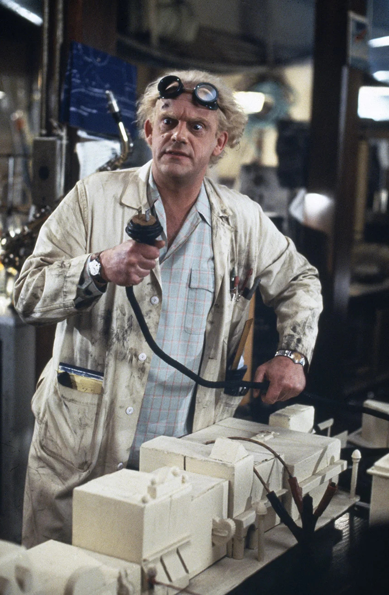

Hidden Layer Society meeting
AI-informed
software development
Building software the way we always knew we should — now that we finally can.
Matteo Scuro
Lecce · Thursday, July 16, 2026
Let's start here
This presentation is
about high jump.
about high jump.
▶ click to play
Let me introduce someone
The Codographer
coder × oceanographer
A researcher. No software engineering background. But a Claude license and a problem to solve — and working code by the afternoon.
Is he a good developer?No
Does his code have tests?Probably not
Is it documented?Not really
Does it work?Yes
Is the Codographer our competitor?

The difference
He uses AI to generate code.
We can use it to apply engineering.
The same principles we already know — now affordable even on a two-week solo project.
01Requirements
02Architecture
03Development
04Testing
05Documentation
Reusability.
Maintainability.
Reliability.
The case study
I could have bought a license.
I built it instead.
The perfect excuse to test one idea: real engineering, on a small, solo, two-week project.
▶
Say hello to Mentimeter
Scan to join the poll
cmcc-poll.vercel.app
or type the URL in your browser
How we built it
Seven phases, before any code
Not to generate code — to think. Everything landed in one document.
01DiscoveryContext, constraints, target load
02MVP scopeWhat's in, what's out, and why
03Tech stackEvery decision with a trade-off
04Data modelThree entities, schema locked
05User flowsPresenter and audience, end-to-end
06Technical risksFive identified, all mitigated
07CLAUDE.mdPersistent spec — the foundation for every coding session
Artifact 1 — requirements
Defined upfront, by category
Functional— Admin8
Authenticate
Create & start session
Navigate questions
End session
View results
Export CSV
Export PDF
Read-only display
Functional— Audience4
Join via 6-digit code
Answer 5 question types
Vote confirmation
Near-real-time sync
Non-functional— qualities & constraints7
200 concurrent users
Zero budget — free tier
2-week delivery
Mobile-first audience
Participant anonymity
Near-real-time updates
Vote integrity
Technical— binding decisions5
Markdown authoring
Next.js + Supabase + Vercel
Auth via env var
Zod validation
Deploy from GitHub
Artifact 2 — the bridge
One document. Permanent context.
The first thing the coding assistant reads, every session. This is the real file.
CLAUDE.md
@AGENTS.md # Mentimeter Clone — MVP ## Project Overview A self-hosted Mentimeter-like tool for running live audience interaction during a single presenter's session. The presenter authors questions in a markdown file committed to the repo; participants join via a 6-digit code on their phone and respond in real time; the presenter controls the flow from a smartphone while a laptop projects live aggregated results on the big screen. **Context:** - Solo developer building this as a personal tool for an upcoming live event - Single presenter (the developer himself) — no multi-tenant, no presenter accounts in MVP - Target: 200 concurrent participants in a single session - Deploy budget: free tier only - Timeline: 2 weeks to a stable, working MVP - UI language: English - Event context: CMCC (Centro Mediterraneo per i Cambiamenti Climatici) poll on AI tools in research **Architectural philosophy:** ruthlessly minimal. Every feature that doesn't materially improve the live event experience is out of scope. The MVP must be boring, reliable, and easy to recover from when something goes wrong on stage. --- ## Tech Stack | Layer | Choice | Version (indicative) | |---|---|---| | Framework | Next.js (App Router) | 15.x | | UI | React + TypeScript | React 19.x | | Styling | Tailwind CSS | 4.x | | Schema validation | Zod | latest | | Markdown parsing | gray-matter + js-yaml | latest | | Database | Supabase (Postgres, hosted) | free tier | | Realtime | Supabase Realtime channels | free tier | | Auth | Custom — `ADMIN_CODE` env var + `X-Admin-Code` header | n/a | | Charts | Recharts (bar/scale) + react-wordcloud | latest | | Hosting | Vercel (Hobby tier) | n/a | | Load testing | k6 (via GitHub Actions or local) | latest | **Why this stack:** one platform for DB + realtime (Supabase) plus one platform for Next + serverless API (Vercel). Two services total. No Docker, no orchestration, no custom WebSocket server to babysit on stage. --- ## Data Model Questions live in `questions.md`, NOT in the database. The DB only stores runtime state: live sessions, participants, and votes. ### `sessions` - `id` (uuid, PK) - `code` (string, 6 digits, UNIQUE) — what participants type to join - `questions_source` (string) — filename/hash of the loaded MD, for traceability - `questions_snapshot` (jsonb) — **frozen at session start**, the source of truth for this run. Edits to `questions.md` after session start MUST NOT affect the running session. - `current_question_index` (int, default 0) - `display_token` (uuid) — one-time token used by the laptop display panel to authenticate read-only without typing `ADMIN_CODE` - `status` (enum: `draft` | `active` | `ended`) - `created_at`, `started_at`, `ended_at` ### `participants` - `id` (uuid, PK) - `session_id` (uuid, FK → sessions) - `client_token` (string, UNIQUE per session) — generated client-side at first join, stored in localStorage. Anonymous identity, no PII. - `joined_at` ### `votes` - `id` (uuid, PK) - `session_id` (uuid, FK) - `participant_id` (uuid, FK) - `question_index` (int) — references position in `sessions.questions_snapshot` - `question_type` (string) — denormalized: `single_choice` | `multiple_choice` | `word_cloud` | `open_ended` | `scale` - `value` (jsonb) — shape varies by type: - `single_choice`: `{ "option_index": 2 }` - `multiple_choice`: `{ "option_indices": [1, 3] }` - `word_cloud`: `{ "words": ["focus", "energy"] }` - `open_ended`: `{ "text": "Great session" }` - `scale`: `{ "value": 7 }` - `created_at` ### Constraints & indexes - **`UNIQUE (session_id, participant_id, question_index)` on `votes`** — non-negotiable. This is the only robust mechanism preventing duplicate votes under race conditions. Application-level checks are optimizations, not safety. - UNIQUE INDEX on `sessions.code` - Composite INDEX on `votes (session_id, question_index)` — hot path for live aggregation - INDEX on `participants.client_token` ### Explicitly NOT in the schema - ❌ Questions table — they live in the markdown file - ❌ Options table — options are nested in the jsonb snapshot - ❌ Users / presenters table — auth is a single env var - ❌ Aggregation caches / materialized views — `COUNT GROUP BY` at 200 votes is instant --- ## Questions Markdown Format The presenter authors `questions.md` at the repo root. Each question is a YAML frontmatter block separated by `---`. ### Supported question types (5 total) ```markdown --- type: single_choice question: How often do you use AI tools? options: - Every day - A few times a week - Occasionally - Rarely or never --- --- type: multiple_choice question: Which AI tools do you use? (select all that apply) options: - ChatGPT - Claude - Gemini - GitHub Copilot --- --- type: word_cloud question: Describe today's session in one word max_words: 3 --- --- type: open_ended question: What's one thing you'd like to learn next? --- --- type: scale question: How likely are you to recommend this workshop? min: 0 max: 10 labels: ["Not at all likely", "Extremely likely"] --- ``` ### Key distinction: `single_choice` vs `multiple_choice` - `single_choice` — participant picks exactly one option; vote value: `{ "option_index": N }` - `multiple_choice` — participant picks one or more options; vote value: `{ "option_indices": [N, M, ...] }` ### Validation rules (Zod) - `type` must be one of the 5 supported types - `question` required, non-empty string - `single_choice` / `multiple_choice`: `options` array, 2-10 items, non-empty strings - `word_cloud`: `max_words` optional, default 3, range 1-5 - `scale`: `min < max`, both integers, range -100 to 100; `labels` optional 2-element array - Validation errors MUST be reported with question index and clear message (e.g. `"Question 3 (scale): max must be greater than min"`) --- ## Key User Flows ### Flow A — Presenter (developer) **Pre-event setup (one-time):** 1. Clone repo, configure `.env` with `ADMIN_CODE`, `NEXT_PUBLIC_SUPABASE_URL`, `SUPABASE_SERVICE_ROLE_KEY` 2. Author/edit `questions.md` 3. Run `npm run validate` locally to confirm the MD parses cleanly 4. Deploy to Vercel **Event day — three devices, three URLs:** | Device | Page | Purpose | Realtime? | |---|---|---|---| | Presenter's smartphone | `/admin` → `/admin/control` | Control flow (Next / Prev / End) | Polling | | Laptop (projected) | `/admin/display?token=...` | Show big join code + live aggregate | **Yes — Supabase Realtime** | | Audience phones | `/s/:code` | Vote and wait | Polling | **Detailed sequence:** 1. Presenter opens `/admin` on smartphone, enters `ADMIN_CODE` → stored in localStorage → API verified 2. Presenter clicks "Start new session" → server parses `questions.md`, validates with Zod, creates `sessions` row with snapshot + generates 6-digit code + generates `display_token` 3. UI shows: control panel link + QR code that opens `/admin/display?token=<display_token>` on the laptop 4. Presenter scans QR with laptop browser → display panel opens, subscribes to Supabase Realtime channel for that session 5. Display panel shows the join code in massive type + participant counter + the current question's live aggregation 6. Control panel on smartphone shows: current question name, participant count, big `← Previous` / `Next →` / `End` buttons 7. Presenter taps `Next` → API updates `current_question_index` → Supabase Realtime instantly updates the laptop display → audience phones see the change within ~2s via polling 8. At end: presenter taps `End` (with confirmation modal) → session status `ended` → audience sees "Thanks for participating!" 9. After ending: presenter can navigate to `/admin/results/<session_id>` to review full results and export CSV or PDF ### Flow B — Audience 1. Open the app on phone, see "Enter code" with numeric keypad 2. Enter 6-digit code → API validates session exists and is `active` 3. Client generates `client_token` (UUIDv4), stores in localStorage under `menti_token_<session_id>` 4. Creates `participant` record (idempotent: if `client_token` already exists for this session, returns existing) 5. Redirected to `/s/:code`, sees current question with type-specific UI: - **single_choice**: large tap-target buttons (≥ 44px), one per option, single selection - **multiple_choice**: large tap-target buttons, multi-select allowed - **word_cloud**: text input + submit, up to `max_words` - **open_ended**: textarea + submit - **scale**: slider with **current value displayed large above the slider** (mobile UX fix — sliders are hard to read on touch without explicit value feedback) 6. Submit → POST vote with `client_token` and `question_index` 7. UI switches to "✓ Submitted, waiting for next question..." with polling at 2s 8. On `current_question_index` change → fetch new question → render 9. On `status = ended` → "Thanks for participating!" **Rejoin behavior:** if the participant refreshes or returns later, localStorage `client_token` resolves them back to the same participant. If they already voted on the current question, they see the "waiting" screen directly. --- ## MVP Scope ### IN **Question types:** - Single choice (bar chart aggregation, single selection) - Multiple choice (bar chart aggregation, multi-select) - Word cloud (frequency-based) - Open-ended (scrolling cards) - Scale (slider input, mean + distribution histogram) **Core features:** - Markdown-based question authoring (`questions.md` in repo) - `npm run validate` CLI script for pre-event MD validation - 6-digit join code, anonymous audience (no login, no PII) - Session control via three separate views (smartphone control + laptop display + audience) - One vote per participant per question (enforced by DB UNIQUE constraint) - Live aggregation on display panel via Supabase Realtime - Late vote acceptance — votes for non-current questions are still recorded - Pre-event warm-up health check endpoint (`/api/health`) - Mobile-first audience UI, mobile-first control panel UI, desktop-optimized display UI - Post-session results page (`/admin/results/[id]`) with CSV export and PDF/print export - k6 load test suite with GitHub Actions workflow (target: 200 VUs, 5 question types supported) ### OUT (deferred to v2+) - Quiz with correct answers, points, leaderboard, timers - Q&A flow (audience asks presenter) - Ranking, image choice questions - Multi-presenter / accounts / multi-tenancy / dashboard - GUI for question editing (markdown stays the authoring interface) - Markdown upload from web UI (current MVP: file lives in repo only) - Branding, themes, custom colors - Moderation of open-ended responses - Live reactions, emojis - Post-event analytics, historical sessions browser - Internationalization (English only) - Animations on question transitions (nice-to-have, not MUST) --- ## Architecture Decisions & Trade-offs ### 1. Questions in markdown, not in DB **Decision:** `questions.md` is the source of truth at authoring time; at session start it is parsed, validated, and **frozen as a jsonb snapshot in `sessions.questions_snapshot`**. **Trade-off:** Editing the MD doesn't update running sessions (good — immutability). Costs ~10-50KB of jsonb per session (negligible). No CRUD on questions in the API (simpler). ### 2. Polling for audience, realtime only for laptop display **Decision:** Only the laptop `/admin/display` subscribes to Supabase Realtime channels. Audience phones and the smartphone control panel use HTTP polling (2-5s intervals). **Trade-off:** Audience sees question changes with up to 2s delay. In exchange, total realtime connections at peak = 1 — way under the free tier limit. Robust by design. **Critical rule:** never add `.channel(...).subscribe()` to audience code paths. If a feature seems to require it, reconsider with polling first. ### 3. Smartphone control / Laptop display split **Decision:** Presenter holds smartphone for controls; laptop projects display panel. They are different routes (`/admin/control` vs `/admin/display`) authenticated differently (`X-Admin-Code` header vs `display_token` query param). **Trade-off:** Two UIs to build instead of one unified presenter view, but each is simpler and ergonomically correct for its device. ### 4. Auth = single env var + display token **Decision:** No accounts, no Supabase Auth, no JWT. Smartphone admin: `ADMIN_CODE` typed once, stored in localStorage, sent as `X-Admin-Code` header on admin API calls, **verified server-side** on every request. Laptop display: short-lived `display_token` (per-session UUID) in query string, resolved via `/api/display/resolve?token=<token>`, read-only access. **Trade-off:** Single tenant. Fine for MVP. ### 5. Late vote acceptance **Decision:** A vote arriving for a `question_index` different from the session's current index is accepted, not rejected. The DB UNIQUE constraint still prevents duplicates. **Trade-off:** Slightly weird semantics but never frustrates a user who tapped Submit a fraction late. ### 6. Throttled UI aggregation on display **Decision:** Display panel maintains an incremental in-memory aggregate, updated as realtime events arrive but **re-rendering throttled to ~250-500ms**. Word cloud layout recomputation throttled to ~1s. ### 7. Snapshot in jsonb vs SessionQuestion table **Decision:** `questions_snapshot` is a single jsonb column on `sessions`, not a separate relational table. **Trade-off:** Not relationally pure, can't JOIN questions. But: one row read at session load, no schema migrations for new question types. Worth it for 5 question types and 5-20 questions per session. ### 8. single_choice vs multiple_choice distinction **Decision:** `single_choice` and `multiple_choice` are separate types with distinct vote value shapes (`option_index` vs `option_indices`). The aggregation logic and input components are separate. **Trade-off:** More types to maintain, but cleaner semantics and avoids forcing participants to mentally understand "pick one vs pick many" from a generic UI. ### 9. Post-session CSV/PDF export **Decision:** Results page at `/admin/results/[id]` implemented in MVP. Available only after session `status = ended`. CSV generated entirely client-side (no server endpoint needed). PDF via `window.print()` with print-specific CSS. **Trade-off:** Basic formatting. Adequate for post-event review and sharing with stakeholders. --- ## Key Technical Risks & Mitigations 1. **Supabase Realtime connection limit** → audience uses polling; only laptop display uses realtime. Verify limit from Supabase dashboard on event day. 2. **Duplicate votes race condition** → DB UNIQUE constraint + `INSERT ... ON CONFLICT DO NOTHING`. Never rely on application-level checks for uniqueness. 3. **Malformed `questions.md` discovered live** → strict Zod validation with per-question error messages. `npm run validate` script in pre-event checklist. 4. **Aggregation lag / flicker on display** → throttled re-render (250-500ms), incremental client-side aggregation. 5. **Cold start on event day after long idle** → pre-event warm-up: hit `/api/health`, create a dummy session, do a test vote, then start fresh. 6. **Load under 200 concurrent participants** → k6 load test (`load-test/`) validates this. Run smoke test (5 VUs) at least once before event, full 200-VU run once to confirm production holds up. --- ## Conventions ### Code style - **TypeScript everywhere**, strict mode on - ESLint default Next.js config + `@typescript-eslint/no-explicit-any` set to error - Prettier with default config, 2-space indent - File naming: `kebab-case.tsx` for components, `camelCase.ts` for utilities, `route.ts` for API routes - React components: function components only, no class components - State: local `useState` and `useReducer`. No Redux, no Zustand, no global state library. - Data fetching: native `fetch` + `useEffect` for polling. No SWR, no React Query. ### Folder structure ``` /app /admin /control → smartphone control panel /display → laptop display panel (read-only via display_token) /results/[id] → post-session results with CSV/PDF export (admin-only) page.tsx → admin code entry /s /[code] → audience view /api /admin /sessions route.ts → POST (create) /[id] route.ts → PATCH (next/prev/end) state/route.ts → GET (polled by control panel) results/route.ts → GET (post-session full results) /verify/route.ts → POST (verify admin code) /display /resolve/route.ts → GET (resolve display_token → session_id) /sessions /by-code/[code]/route.ts → GET /[id] state/route.ts → GET (polled by audience) votes/route.ts → POST participants/route.ts → POST aggregate/route.ts → GET (per-session live aggregate) questions/[index]/route.ts → GET (single question data) /health/route.ts → GET (warm-up) /lib /db → Supabase client + typed queries /md → markdown parser + Zod schemas /realtime → realtime channel helpers (admin/display ONLY) /components /admin → control + display + results components /audience → audience input components by question type /shared → buttons, layout, QRCode, WordCloud, etc. /load-test → k6 load test script + GitHub Actions workflow + README /scripts validate.ts → npm run validate script /questions.md → the source of truth for questions ``` ### Naming - DB tables: plural snake_case (`sessions`, `participants`, `votes`) - DB columns: snake_case - TypeScript: camelCase for variables/functions, PascalCase for types/components - API routes: REST-ish; admin endpoints under `/api/admin/*`, public under `/api/sessions/*` - Realtime channels: `session:{session_id}` for the per-session channel ### Error handling - API errors: structured JSON `{ error: { code: string, message: string, details?: unknown } }` - Validation errors from Zod: surfaced with question index when relevant - Never return generic 500 without logging the underlying error server-side - User-facing error messages always actionable, never raw stack traces --- ## Setup Commands ```bash # install npm install # environment cp .env.example .env.local # fill in: ADMIN_CODE, NEXT_PUBLIC_SUPABASE_URL, NEXT_PUBLIC_SUPABASE_ANON_KEY, SUPABASE_SERVICE_ROLE_KEY # database: run migrations in Supabase SQL editor (see /supabase/migrations/) # validate questions.md npm run validate # dev npm run dev # build & test production locally npm run build && npm start # deploy git push origin main # Vercel auto-deploys # load test (requires k6 installed) BASE_URL=https://cmcc-poll.vercel.app ADMIN_CODE=your-code VUS=5 k6 run load-test/k6-script.js ``` ### Pre-event checklist (MANDATORY) 1. `npm run validate` — confirm `questions.md` parses with zero errors 2. Deploy latest to Vercel and verify deploy success 3. Open `/api/health` from a browser — must return 200 (warms up Vercel + Supabase) 4. Open `/admin` on smartphone, enter `ADMIN_CODE`, create a test session 5. Scan QR on laptop, confirm display panel loads and shows join code 6. Open `/s/<code>` on a second phone, join, vote on first question, verify it shows on laptop 7. End test session, verify `/admin/results/<id>` loads and CSV export works 8. Run k6 smoke test (`VUS=5`) to confirm production stack handles load 9. Wait less than 30 minutes before going live (else cold start risk returns) — if waiting longer, repeat step 3 --- ## Notes for Claude Code ### Prioritize - **Reliability over features.** This runs live in front of 200 people. A boring app that works is infinitely better than a fancy app that flakes. - **Server-side validation everywhere.** Never trust the client. Especially `votes` POST and admin API auth. - **DB constraints over application checks** for invariants (uniqueness, FK integrity). The DB is the last line of defense. - **Mobile-first** for `/s/*` and `/admin/control`. Test in Chrome DevTools mobile emulation at iPhone SE resolution (smallest reasonable target). Tap targets ≥ 44px. - **Clear error messages** on the admin side, especially for markdown validation errors. ### Avoid - **Adding realtime subscriptions to audience code paths** (`/app/s/*` or `/components/audience/*`). Only `/app/admin/display` may use `supabase.channel(...).subscribe()`. - **New dependencies.** Stack is locked: Next, React, Tailwind, Zod, gray-matter, Supabase JS, Recharts, react-wordcloud. Adding anything else requires explicit discussion. - **Premature optimization.** No caching layers, no Redis, no memoization beyond what React naturally needs. - **Global state libraries.** No Redux, Zustand, Jotai, Recoil. - **Custom WebSocket servers / Socket.io / SSE.** Supabase Realtime only. - **Authentication beyond what's specified.** No Supabase Auth, no NextAuth, no JWT. - **Accepting unvalidated input into the votes API.** Every `value` payload must be validated against the question's type from the snapshot before insert. ### Ask for confirmation before - **Adding a new question type.** The 5 types are scoped intentionally. - **Changing the markdown format.** It's the user-facing contract. Breaking it breaks the presenter's existing files. - **Modifying the auth model.** - **Adding any external service** (email, SMS, analytics, error tracking). Free tier discipline. - **Touching the DB UNIQUE constraint on votes.** It's load-bearing. - **Refactoring `questions_snapshot` into a relational structure.** ### Default to simple When in doubt between a clever solution and a boring one, pick boring. This is a MVP for a one-shot live event. Cleverness is technical debt; boringness is what ships on time and runs on stage without surprises.
Written once
Before any code, in the repo root
Read every time
Same foundation for every coding session
No drift
Decisions don't get rediscovered or contradicted
Artifact 3 — user flows
Presenter flow — two devices
Artifact 3 — user flows
Audience flow — join, vote, wait
Back to the high jump
The foam mats didn't eliminate the best jumpers.
They separated them from everyone else.
AI won't eliminate software engineers. But it makes the difference between a software engineer and someone who writes code much more visible than it used to be.
That's the opportunity. And the choice is ours.
That's the opportunity. And the choice is ours.
🖼
save image as fosbury-1968.png
One last thing
Thank you.
Questions?
Let's talk about how you're using your foam mat.
Matteo Scuro
Hidden Layer Society · Lecce 2026